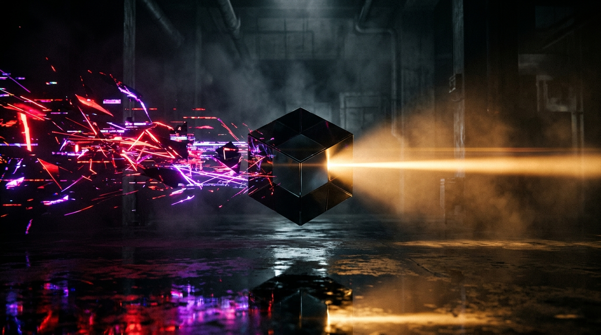
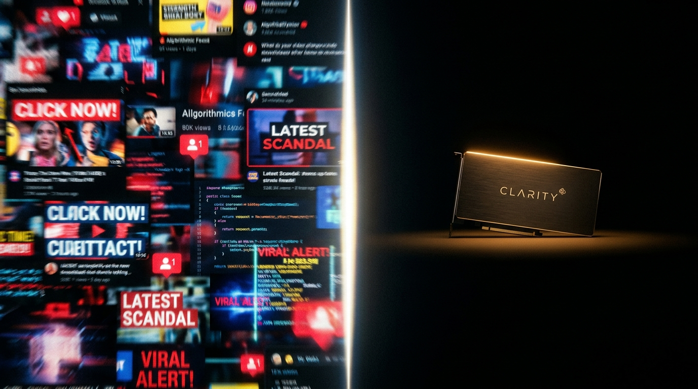
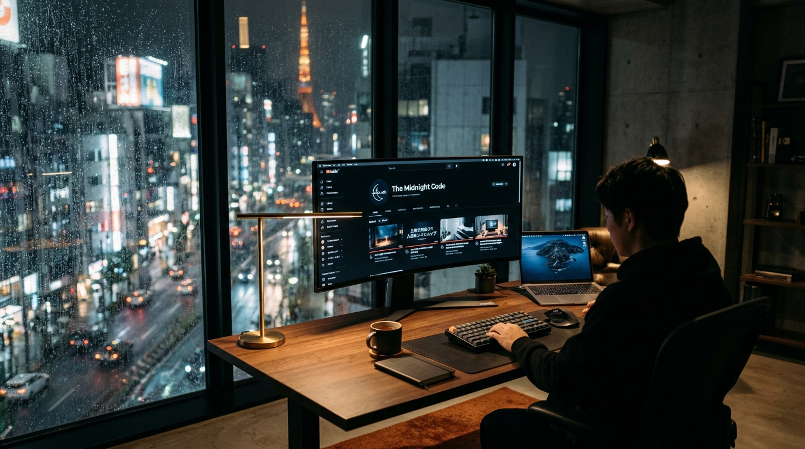
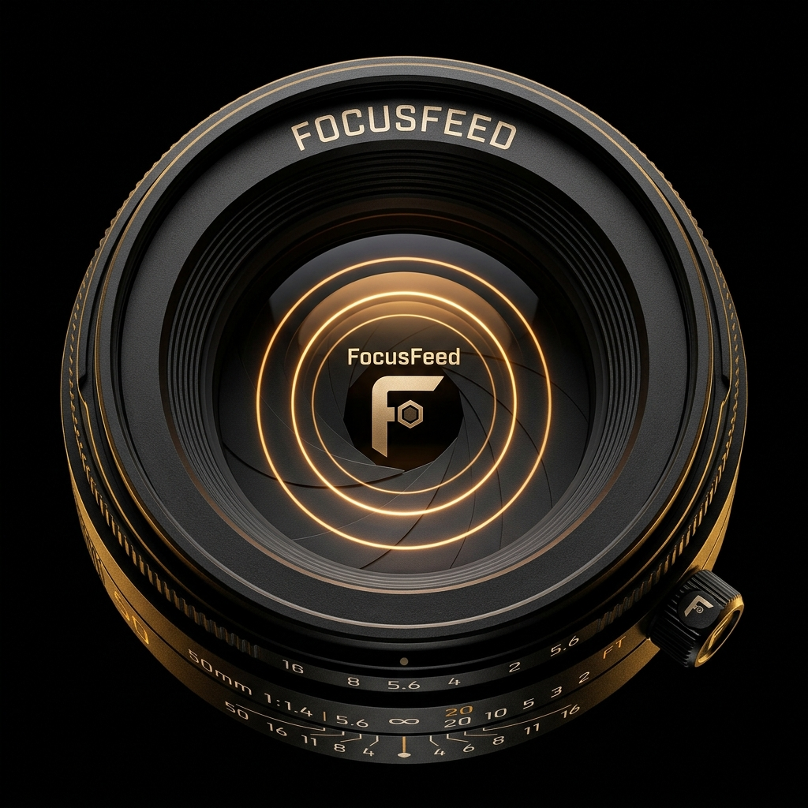

A bespoke optical filter for YouTube. General filters out reflexive noise. Focus carves out dedicated deep work sessions. No algorithms. No rabbit holes. Just intentional discovery.

On the left: infinite scrolling, screaming thumbnails, and engineered dopamine exhaustion. On the right: total clarity, calm negative space, and deep work.

Hyperbolic faces, red arrows, rage-inducing comments, and 15 open rabbit-hole tabs.
Pure signal. Only the lecture or topic you came for. Zero peripheral distraction.
YouTube holds humanity’s greatest archive of masterclasses, technical papers, cinema craft, and music. Yet the default interface is tuned to hijack human neurochemistry with thumbnail shock, infinite autoplay, and perpetual outrage.
FocusFeed restores sovereignty. You don't quit YouTube; you put on a pair of noise-canceling glasses. You decide what enters your visual field.

Click the modes below to experience how FocusFeed purifies your YouTube experience from high-arousal noise to calm signal.
One extension that adapts to whether you want everyday defense or a surgical work sprint.
"Keep out of my feed." Specify topics you never want to see—reaction drama, celebrity gossips, sensational politics, spoilers.
"Keep only what I need." When you sit down to master a topic, FocusMode turns YouTube into a single-topic university.
Filtering videos is only half the battle. Modern YouTube is packed with psychological triggers: vertical Shorts carousels, toxic comment sections, autoplay sirens, and shopping shelves.
FocusFeed gives you instant zero-latency CSS switches that run natively in your browser—without sending requests to external servers.

Engineered to calibrate bandwidth between human curiosity and algorithmic noise.
Extensions that inject heavy scripts or redraw pages cause jarring layout shifts. FocusFeed runs natively at the DOM level using isolated world scripts and instant CSS variables.
Runs identically on YouTube Light Mode and Dark Mode, respecting native YouTube color tokens and typography.
No data broker deals. No ad injections. You are the patron, not the product.
No sign-up or card required
Full surgical layout decluttering, channel blocking, and offline keyword-level filtering right in your browser.
Cancel anytime · Powered by Dodo Billing
Sublime semantic topic filtering powered by hosted high-dimensional embeddings. Understands what videos are actually about, not just keyword matches.
Install the extension in 10 seconds. Reload YouTube. Take back hours of your life every single week.
Compatible with Chrome, Brave, Arc, Edge and Chromium browsers.